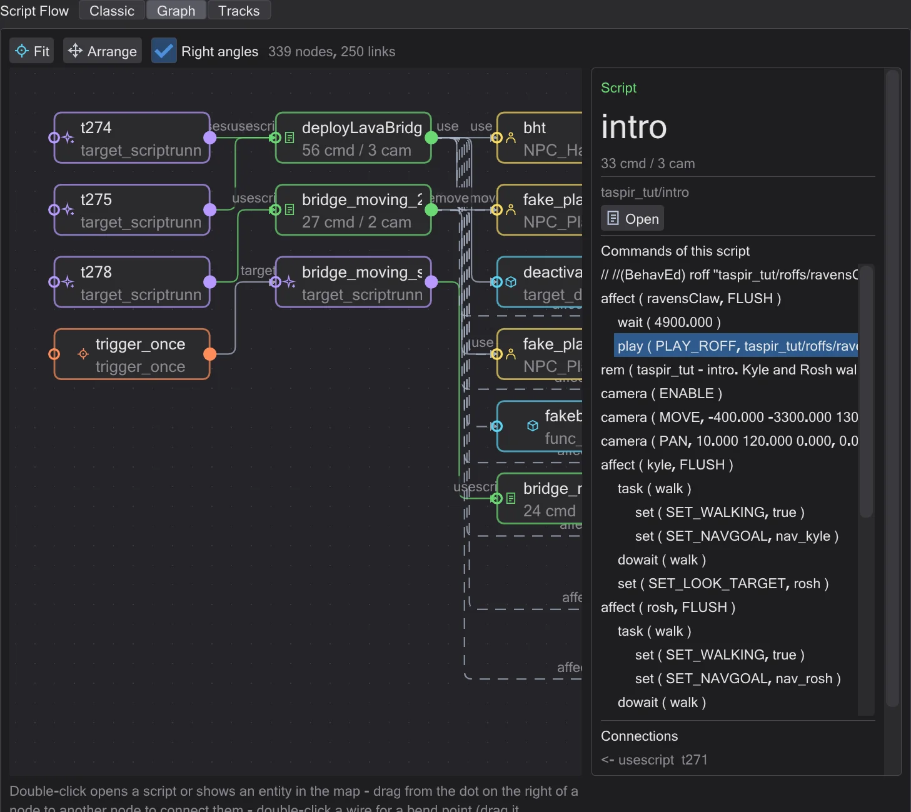
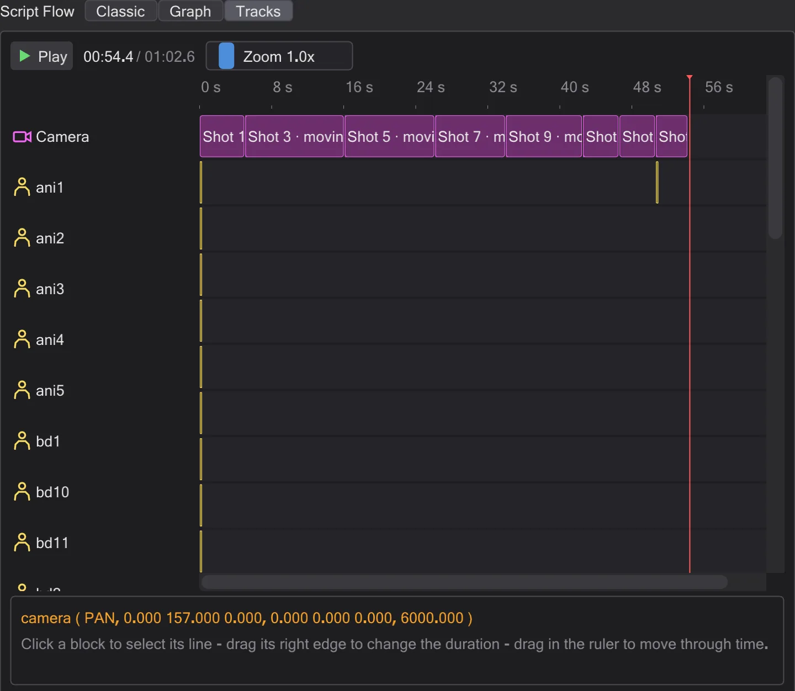
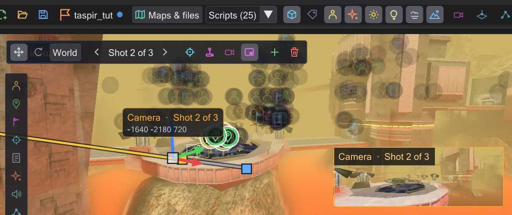
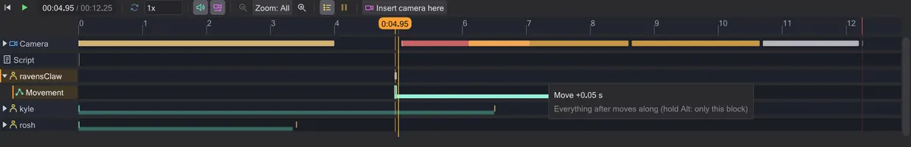
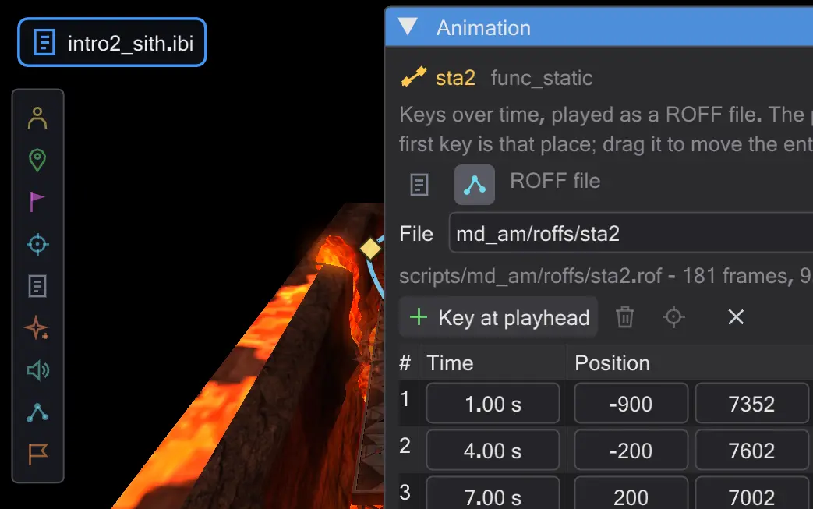
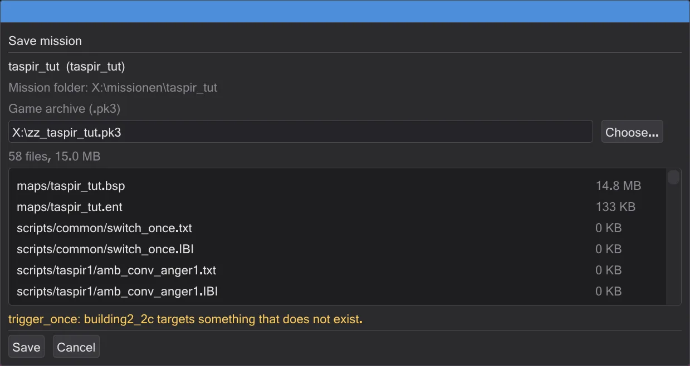
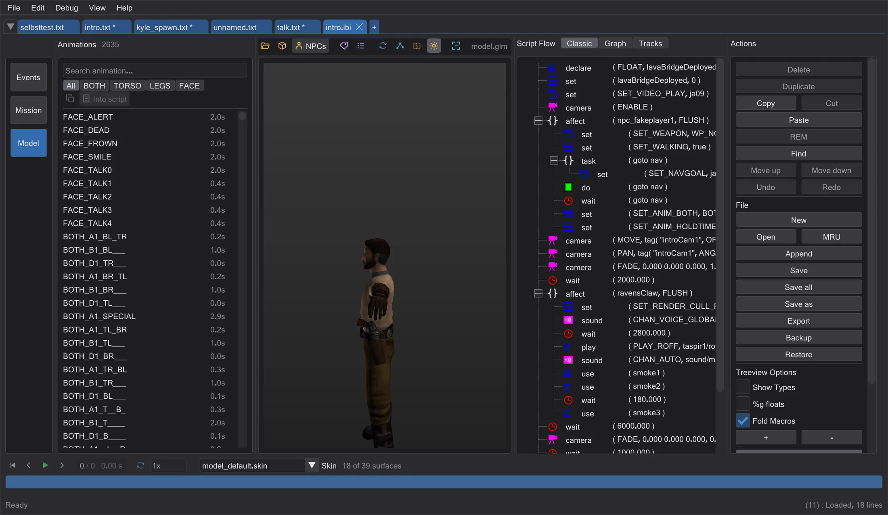

What BehavEd can do
A tour of the whole program: writing scripts, seeing them on the map, cameras, figures, animation, missions and the tools around them.
BehavEd-Remake writes ICARUS scripts - the scripts behind every cutscene and every scripted moment of Jedi Academy and its mods. It writes them exactly like Raven's original BehavEd, file for file, and then shows you what they do: on the map, in 3D, over time. Each section below links to the tutorials that practise it.
Write scripts like the original#

- Every command of the game in one list - double-click, drag or press Insert to add it. Three ways to add a command
- Each value in its own field: lists of allowed values, names picked from the map, sounds you can play, expressions with
get,tagandrandom. Change the values of a command - Copy, move, comment out, undo every step - even one single step from the middle of the history. Move, copy and comment out lines, Undo anything - even one step from the middle
- Compile to the
.ibithe game runs, with clear messages that jump to the wrong line. Compile and fix errors - Every command and every
SET_field explained: Every command.
Three views of the same script#




クラシック is the tree of the original. グラフ shows the mission as nodes - the player start, runners, characters, scripts - and lets you connect them by dragging. トラック lays the script out over time, with the camera, every figure and the dialogue in rows. スクリプトの流れ:クラシック・グラフ・トラック, Connect a character to a script
The map in 3D - as the game draws it#

Maps load straight from the game's .pk3 files, with their shaders, lightmaps, fog, glow, effects, sky portals and mirrors. Fly through them, look from above, save views on number keys. Place entities with tiles, drag and turn them on the grid, edit every key in the inspector. マップ, Place, move and turn entities, Edit an entity's keys, Look at the map from above
Cameras you can see and fly#
 アニメーション
アニメーションEach camera ( MOVE ) and PAN is a shot on the map with its path. Move and turn shots with the gizmo, put them where you are looking, or sit in a shot and fly it in pilot mode. Zoom, fade, shake and follow play in the view exactly as in the game. カメラ, Fly a camera shot yourself, Put a shot where you are looking, Zoom, fade to black and shake
Figures that walk their paths#

Characters spawn with their real models and animations and walk where the script sends them. Their paths have handles: drag a walk target, insert a point mid-walk, switch walk, run or walk backwards, set where a figure looks and which way it faces. キャラクターと道, Walk, run or walk backwards, Make a figure look at someone, Turn a figure at a moment
A timeline for the whole scene#

アニメーションPlay the scene with sound, at any speed. Every command is a block in time - drag it and everything after moves along, drag its edge to change a duration. タイムライン, Retime a cutscene in the timeline
Animation: move commands and ROFF files#

アニメーションSet keys over time for a door, a platform or a ship. behaved writes them as move commands or builds a ROFF file, and it turns the game's own ROFF files into keys you can change - as a copy, never touching the original. 可動物のアニメーションと ROFF ファイル, 5 · The ship takes off, A door that opens, Change a ROFF file of the game
Missions: from nothing to a .pk3#

Start a mission on any map with one click, open the missions of the game or a mod, continue them from their folder. ミッションを保存 checks everything, compiles every script and packs one .pk3 with map, entities, scripts and ROFF files - ready for devmap. NPC waypoint networks are created and checked on the way. ミッション, Your own mission: take-off on Taspir, Give NPCs paths to walk
Character models and their animations#

Every character of the game with its skin, every animation with its frames - click to play, double-click to put it into the script. モデルビューとキャラクター, Let a figure play an animation, Look at a character model
The tools around it#
- Find and replace in one script or in all open ones. Find and replace in all open scripts
- Tabs, bookmarks and a split view to compare scripts and copy across. Bookmarks and the split view
- Backups on every save, a backup folder, revert any command to how it was. 保存・コンパイル・チェック
- Four languages, six themes, any interface size, every shortcut rebindable. 設定とアップデート, キーボードショートカット
- Checks for updates and installs them. アップデートと変更履歴